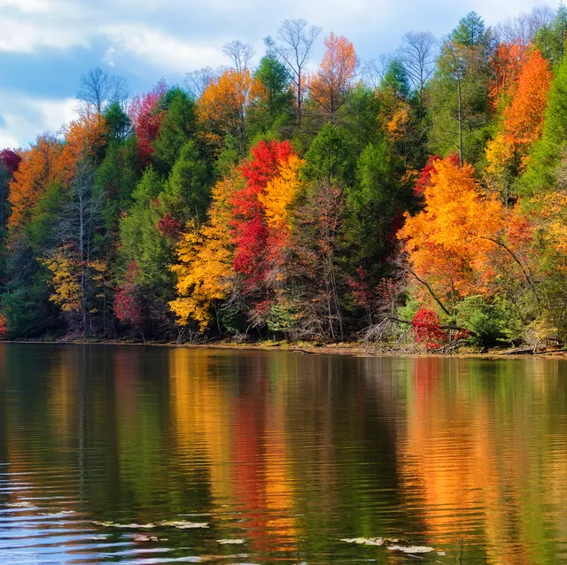

Fall Page
 I honestly do really like fall. Fall is really pretty with all the trees turning colors and I feel like sunsets in the fall are the prettiest. I also like fall because that means its hunting season and good fishing season. By the time you get into fall you are starting to get kinda sick of the super hot misrable weather and the fall is a nice break.